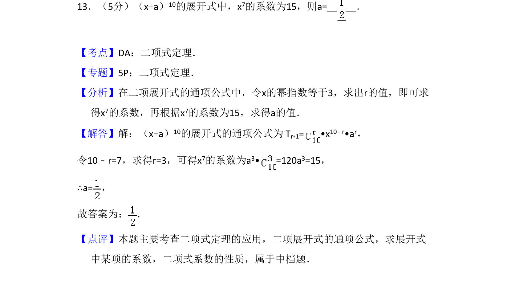
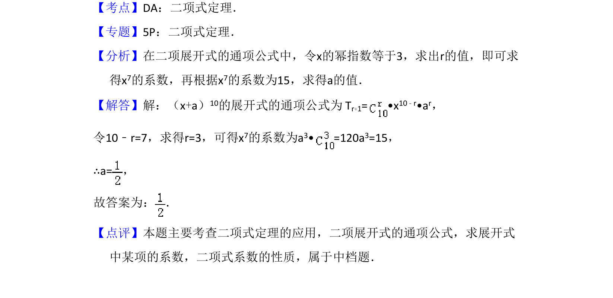

考点：二项式定理 通项公式

该题考查二项式定理中通项公式的应用，求展开式中特定项的系数。

📄 原 PDF 第 10 页：
素材/真题/吉林/2008-2024·（吉林）数学高考真题/2014年高考数学试卷（理）（新课标Ⅱ）（解析卷）.pdf
13．（5分）（x+a）10的展开式中，x7的系数为15，则a= ．
【考点】DA：二项式定理．菁优网版权所有 【专题】5P：二项式定理． 【分析】在二项展开式的通项公式中，令x的幂指数等于3，求出r的值，即可求 得x7的系数，再根据x7的系数为15，求得a的值． 【解答】解：（x+a）10的展开式的通项公式为 Tr+1= •x 10﹣r•ar， 令10﹣r=7，求得r=3，可得x7的系数为a3• =120a 3=15， ∴a=， 故答案为： ． 【点评】本题主要考查二项式定理的应用，二项展开式的通项公式，求展开式 中某项的系数，二项式系数的性质，属于中档题．